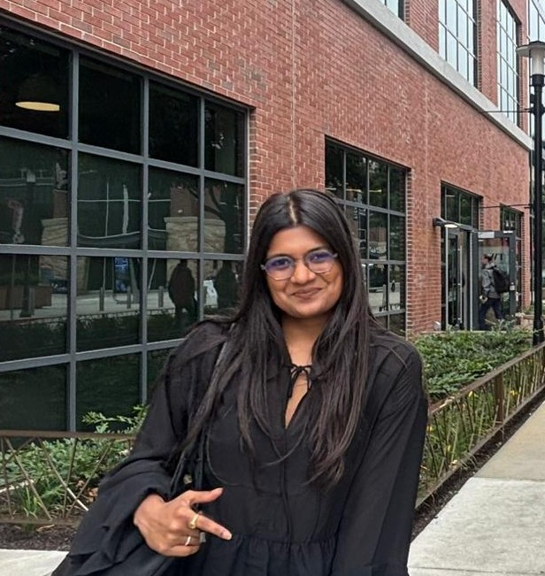

Romy Nileshkumar Patel
M.S. in Computer Science, Georgia Institute of Technology · Ph.D. Applicant (2027) · romypatel3523@gmail.com

Hi, I'm Romy — an aspiring AI researcher with a background in machine learning, large language models, and software systems.
My research interests lie at the intersection of Agentic AI, Generative AI, and Machine Learning, with a particular focus on reasoning, memory-augmented language models, structured knowledge representation, and trustworthy AI. I'm drawn to building intelligent systems that continuously acquire, organize, and use knowledge to solve complex, long-horizon tasks in dynamic environments.
Alongside my research, I bring over four years of industry experience as a Software Engineer, building scalable backend systems, cloud-native microservices, and data-intensive applications. I've also served as a Teaching Assistant at Georgia Tech for graduate-level courses in Regression Analysis and Computational Statistics.
My long-term goal is to advance both the theoretical foundations and practical capabilities of AI systems that can reason, adapt, and learn autonomously — enabling reliable intelligent agents for scientific discovery, programming, and other knowledge-intensive domains.
Feel free to reach out for potential research collaborations or opportunities!